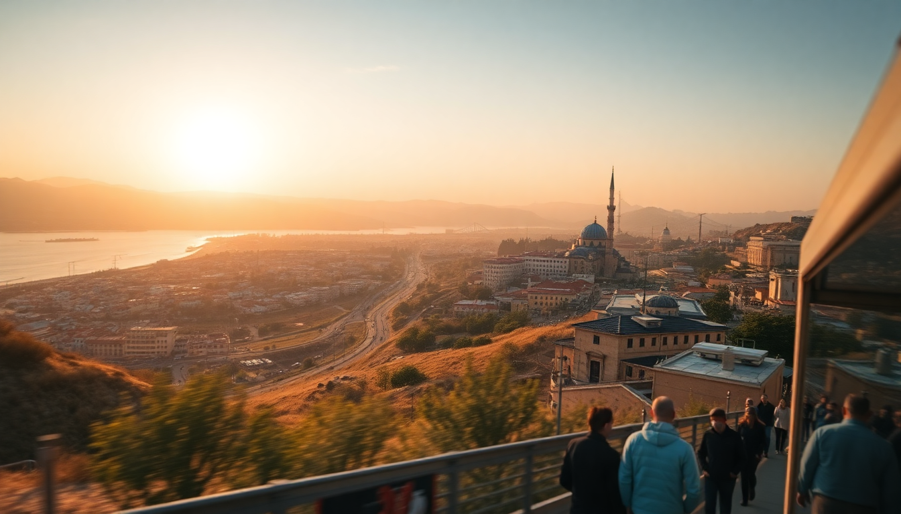

Getting Around Turkey: Trains, Buses, Flights & Ferries

I spent three weeks hopping between Istanbul’s spice markets, Cappadocia’s fairy chimneys, Antalya’s turquoise coast, and Izmir’s seaside promenades — and figuring out how to get around Turkey was half the adventure. Trains, buses, domestic flights, and ferries all play a role, and each has its own quirks. Here’s what actually worked, what didn’t, and what I’d do differently next time.
What’s the best way to get between Istanbul and Cappadocia?
Fly. No question. The overnight bus from Istanbul to Göreme takes 10–12 hours, and while it’s cheap (around 300–400 TL), you’ll arrive groggy and miss a morning balloon ride. I booked a one-way flight with Turkish Airlines from Istanbul’s Sabiha Gökçen (SAW) to Nevşehir (NAV) — about 90 minutes, and the airport shuttle from NAV to Göreme runs 50 TL and drops you right at the town center.
- Flight tip: Pegasus Airlines also flies this route, often cheaper but with stricter baggage (15 kg carry-on included).
- Bus alternative: If you’re on a tight budget, Kamil Koç runs clean coaches with snacks and USB ports. I’d only do this if you have a full day to recover.
- Train?: Not an option. There’s no direct rail from Istanbul to Cappadocia — you’d need to go via Ankara and Kayseri, which adds hours.
I stayed at Mithra Cave Hotel in Göreme, and the owner arranged a shared shuttle from the airport for 100 TL. Way easier than figuring out the local dolmuş after a flight.
How do you get from Cappadocia to Antalya?
This is the tricky leg. There’s no direct flight, and the bus takes about 8–9 hours. I took the overnight bus from Göreme to Antalya with Süha Turizm — left at 10 PM, arrived at 6 AM. The bus was comfortable (reclining seats, tea service), but the winding mountain roads made sleep patchy.
- Bus companies: Süha Turizm and Kamil Koç both run this route. Book a seat on the right side for better views of the Taurus Mountains at dawn.
- Day bus: If you don’t mind losing a day, the daytime bus stops at Pamukkale around hour 5. You can hop off, see the travertines for 2–3 hours, and catch a later bus to Antalya. I wish I’d done this.
- Rental car: A friend drove this stretch and said the D300 highway is scenic but has aggressive drivers. Not for nervous drivers.
In Antalya, I based myself at Tuvana Hotel in Kaleiçi (the old town). It’s walking distance to Hadrian’s Gate and the marina, so I didn’t need a car once I arrived.
Should I take the train from Izmir to Selçuk or Pamukkale?
Yes — the İzmir–Selçuk regional train is one of the best-value rides in Turkey. I caught it from İzmir Basmane Station to Selçuk (about 80 minutes, 25 TL). The carriage was clean, air-conditioned, and had a snack cart. From Selçuk, it’s a quick dolmuş to Ephesus or a minibus to Pamukkale.
- Train route: The İzmir–Selçuk–Denizli line runs multiple times daily. For Pamukkale, get off at Denizli and take a 30-minute minibus.
- Bus alternative: If you’re going straight from İzmir to Pamukkale, a direct bus with Pamukkale Turizm takes about 3 hours and costs 150 TL. The train is slower but more scenic.
- Pro tip: Selçuk’s train station has a left-luggage office (20 TL per bag). I dropped my backpack, walked to the House of the Virgin Mary, and picked it up before the evening train back to İzmir.
I ate lunch at Cimrin’in Yeri in Selçuk — a family-run spot near the station that does a mean pide for 60 TL. Not fancy, but exactly what you want after a morning of ruins.
What about ferries in and around Istanbul?
Istanbul’s ferries are essential, not touristy. I used the Şehir Hatları public ferry from Eminönü to Kadıköy (20 minutes, 15 TL with an Istanbulkart). The Bosphorus cruise is a classic, but the commuter ferry gives you the same views for a fraction of the price.
- Key routes: Eminönü–Kadıköy, Beşiktaş–Üsküdar, and Kabataş–Kadıköy. All accept Istanbulkart.
- Princess Islands ferry: From Kabataş to Büyükada (90 minutes, 25 TL). Rent a bike on the island — no cars allowed.
- Avoid: The private Bosphorus dinner cruises. Overpriced, mediocre food, and you’re stuck for 3 hours. The public ferry at sunset is better.
I stayed at Hotel Amira in Sultanahmet, and the tram from there to Eminönü took 10 minutes. The ferry to Kadıköy from Eminönü gave me a perfect view of the Galata Tower lit up at dusk.
Is it worth renting a car in Antalya or Cappadocia?
In Cappadocia, no. The roads between Göreme, Uçhisar, and the open-air museum are narrow, and parking at the museum costs 20 TL. I used dolmuşes and walking — everything is within 5 km. In Antalya, a car is more useful if you want to explore side beaches like Olympos or Çıralı, but inside Kaleiçi, cars are a headache.
- Cappadocia without a car: Dolmuş from Göreme to Uçhisar (15 TL), or join a small-group tour for the Red Valley hike. I did a guided walk with Heritage Travel for 50 EUR — worth it for the history.
- Antalya with a car: I rented from Circular at the Antalya airport for 4 days (about 800 TL/day including insurance). Drove to Phaselis beach and Termessos ruins — both worth the toll road fees.
- Rental warning: Turkish drivers use horns liberally and lane markings are suggestions. If you’re not comfortable with that, stick to buses.
My one regret: driving to Kemer from Antalya in August. Traffic was bumper-to-bumper for 20 km. Take the dolmuş instead.
How do domestic flights compare to buses for long distances?
Domestic flights win for anything over 500 km. I flew Istanbul to Nevşehir (90 minutes, 800 TL) versus the bus (12 hours, 400 TL). The time saved is worth the extra cost, especially if you’re on a tight itinerary. Turkish Airlines and Pegasus both fly to 30+ cities.
- Baggage: Pegasus charges 200 TL for checked bags at the airport — add it online for 150 TL. Turkish Airlines includes 15 kg carry-on and 20 kg checked.
- Airports: Sabiha Gökçen (SAW) is 50 minutes from Taksim by Havabus (100 TL). Istanbul Airport (IST) is 45 minutes by metro (M11 line, 15 TL). Factor that into your timing.
- Bus for short hops: Izmir to Selçuk (80 minutes) or Antalya to Kaş (3 hours) are fine by bus. Anything over 6 hours, I’d fly.
I used eSIM from Airalo for data — 5 GB for 12 USD. Worked everywhere except in the Cappadocia valleys. No affiliate link here, just a recommendation.
FAQ
Is the Turkish rail pass worth it for tourists? The Türkiye Rail Pass costs about 1,200 TL for 15 days of unlimited second-class travel, but it only covers TCDD trains (not high-speed YHT on all routes). For most tourists, buying individual tickets is cheaper unless you’re doing multiple long-haul train legs like Istanbul–Ankara–Konya. I didn’t buy the pass — my train journeys were short (Izmir–Selçuk) and cost under 50 TL each.
Can I use the same transport card in Istanbul and other cities? No. Istanbul’s Istanbulkart only works in Istanbul. In Antalya, you need the Antalya Kart (available at kiosks near tram stops). In Izmir, the İzmirim Kart is used for metro and ferries. They’re all rechargeable, but you can’t transfer balances. I kept a small stash of coins for dolmuşes — they don’t accept cards.
Are overnight buses safe for solo travelers? Yes, with caveats. I’m a solo female traveler and felt safe on Kamil Koç and Süha Turizm overnight buses. Buses have security cameras, and the attendants check tickets. But keep your valuables in a small bag on your lap, not in the luggage hold. I saw someone’s backpack taken off at a rest stop in Konya — the driver got it back, but it was stressful.
Conclusion
- Fly between Istanbul and Cappadocia — the bus is too long for a short trip.
- Take the train from Izmir to Selçuk for Ephesus — it’s cheap, scenic, and easy.
- Use public ferries in Istanbul — skip the tourist cruises.
- Rent a car only in Antalya if you’re hitting beaches outside the city — otherwise, dolmuş is fine.
- Book buses for Cappadocia–Antalya or Antalya–Izmir, but choose an overnight if you want to save a day.